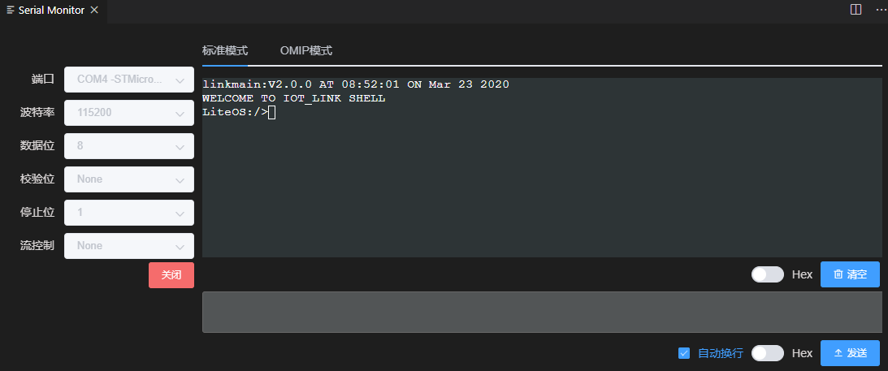

串口工具
标准模式
- 点击VSCode底部工具栏的‘Serial’按钮
- 在弹出界面中选择对应的端口号、波特率等参数，点击‘打开’
 - 点击输出区域下方的‘Hex’按钮，可设置输出内容为文本格式或16进制格式
- 点击输入区域下方的‘Hex’按钮，可设置输入内容为文本格式或16进制格式
- 当勾选‘自动换行’时，会在输入的文本后自动添加‘\r’换行
注意：关闭窗口并不会关闭底层串口，请手动点击‘关闭’按钮
OMIP模式
- 切换到OMIP模式
- 选择对应的端口号、波特率等参数，点击‘打开’

- 在输入区域可选择命令分类、命令类型，也可填入命令的data数据
- 修改后点击‘发送’
- 在输出区域可查看已发送的命令和模组的返回，点击选中可在右侧查看命令的详情